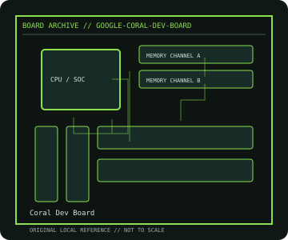

[ INDIVIDUAL COMPONENT // MOTHERBOARDS ]
Coral Dev Board
Google Coral embedded ML SBC, 2019. This record documents the named model and its documented variants; confirm the PCB revision, submodel and firmware on the physical unit.

REVISION WARNING: Similar model names and PCB revisions may have different processors, connectors or firmware. Read the silkscreen and assembly code; use the support files for that exact board variant.
Specifications
| Catalog subcategory | Integrated and compact boards |
|---|---|
| Exact model / era | Coral Dev Board — Google Coral embedded ML SBC, 2019 |
| CPU and socket / SoC | NXP i.MX 8M system processor (quad Cortex-A53 plus Cortex-M4F) and onboard Google Edge TPU coprocessor |
| Chipset / platform | NXP i.MX 8M with Google Edge TPU |
| Memory | 1 GB LPDDR4 on-board; not user-upgradeable |
| Slots and connectivity | On-board 8 GB eMMC, microSD, USB-C, USB 3.0 Type-A, Gigabit Ethernet, Wi-Fi/Bluetooth, HDMI 2.0, MIPI CSI/DSI and 40-pin expansion header |
| Firmware | Mendel Linux and Coral firmware images are model-specific; consult the board hardware documentation and supported image/recovery procedure. |
Compatibility and revision notes
The Edge TPU requires compatible runtime/compiler models; Dev Board Mini and Coral SOM carrier boards have different layouts and firmware. Check supply and camera/display pinout in the hardware guide.
Socket, connector shape and family branding alone do not establish compatibility. Verify the exact processor list, minimum BIOS, memory population table, power input, dimensions, and shared-lane behavior in the cited manual before installation.
Preservation and repair
Use ESD protection around the MIPI FPC and expansion header; inspect eMMC/USB-C and board-to-board thermal contact. Preserve installed Mendel release and Edge TPU runtime information before reimaging.
For archival preservation, photograph the PCB, labels, connectors and included accessories before cleaning. Record serial/date codes, firmware versions, known faults, prior repairs and test conditions; use ESD-safe handling and do not power a board with loose conductive hardware beneath it.
Sources & further reading
- Coral Dev Board — product/manual referenceModel-specific platform, board layout and interface reference.
- Coral Dev Board — support and firmware resourcesSupport documentation; match the PCB revision, CPU support list and firmware release to the physical board.
Manufacturer/model documentation is the primary reference. Where vendor support is archived, match its revision notes to the board and do not cross-flash firmware from a similar product.